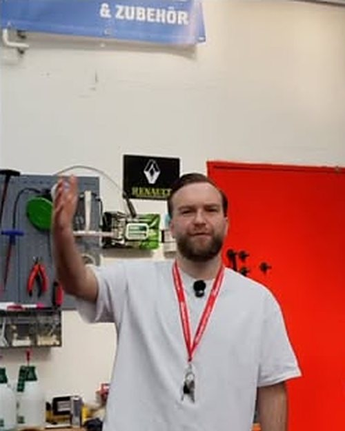
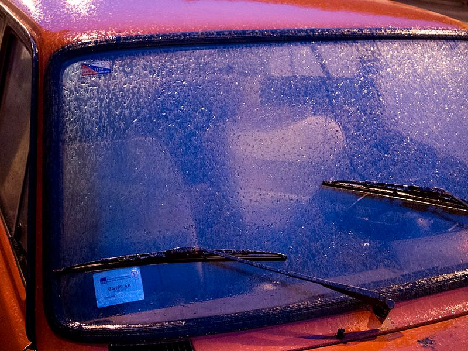
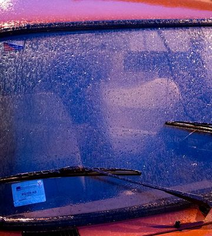
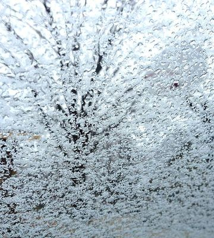
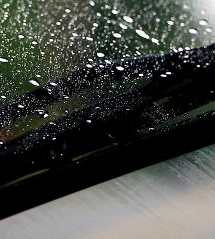
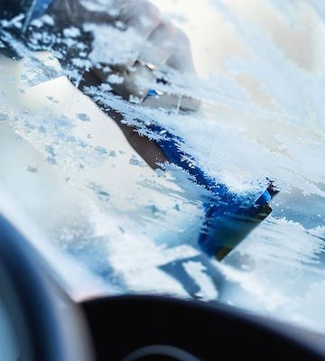
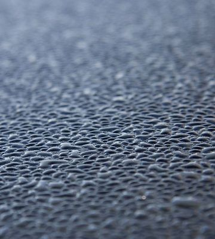
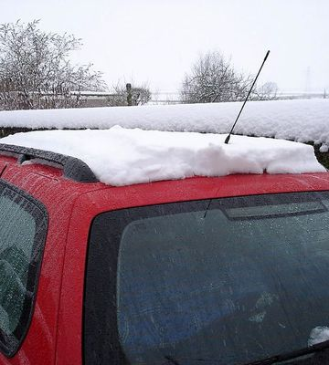
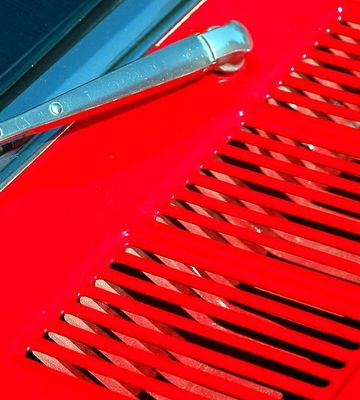

Scheibe
 kaputt?
kaputt?
Autoglas-Werkstatt in Duisburg-Obermarxloh. Schick uns ein Foto, wir sagen dir, was es kostet.
Foto per WhatsAppMo bis Sa 9:30 bis 18:00 · Duisburger Str. 150
oder anrufen: 0203 36989833
Reparieren oder tauschen?
Halt eine 2-Euro-Münze dran, sie hat 25,75 mm. Kleiner, nicht vor dem Fahrer und nicht am Rand: Dann reparieren wir.
Das reparieren wir.
Klein und nicht im Sichtfeld: Das füllen wir mit Harz, die Scheibe bleibt drin.
Mit Teilkasko kostet dich das in der Regel nichts.
Oft in einer halben Stunde erledigt, in Duisburg oder mobil bei dir.
Bis zum Termin: durchsichtiges Klebeband drauf. Dann kommen kein Dreck und kein Wasser rein.
Foto per WhatsAppMit Teilkasko meistens 0 €.
Die Reparatur übernimmt bei den meisten Versicherern die Teilkasko. Beim Tausch zahlst du nur deine Selbstbeteiligung. Dein Beitrag steigt nicht, denn die Teilkasko kennt keine Schadenfreiheitsklasse.
Wir rechnen direkt ab mit
und allen anderen Kfz-Versicherern.
Alles rund um die Scheibe.

- ReparaturSteinschlag reparierenTeilkasko: meist 0 € →
- TauschFrontscheibe30 Jahre dicht →
- TauschSeiten- und Heckscheibeauch nach Einbruch →
- TechnikKamera kalibrierennach dem Tausch →
- Vor OrtMobiler Servicebis 50 km →
- AbrechnungDirekt mit der Versicherungalle Versicherer →
- FahrzeugePkw, SUV, Transporteralle Marken →
- FahrzeugeWohnmobil, Lkw, US-Carauch große Scheiben →
- FirmenFuhrparks und Dienstwagenauch auf eurem Hof →
- ZubehörWischer und Pflegezum Shop →
-
Erst schickst du ein Foto.
Per WhatsApp an 0176 20908479. So sieht das zum Beispiel aus:

Moin, hab nen Steinschlag. Geht das noch? -
Dann sagen wir, was es ist.
Hi Bruder, alles klar? Der ist klein, den reparieren wir.
-
Du kommst vorbei.
Komm um 14 Uhr vorbei, Duisburger Str. 150.
Oder wir kommen zu dir, im Umkreis von 50 km.
-
Papierkram? Machen wir.
Wir rechnen direkt mit deiner Versicherung ab.
„Ich musste mich um nichts kümmern mit der Versicherung.“
Was Kunden schreiben
„Bin ohne Termin hingefahren, eine halbe Stunde später war der Steinschlag ausgebessert.“
„Mir wurde unglaublich schnell geholfen und hatte nach nicht einmal 3 Stunden mein Auto wieder.“
„Scheibe vom Wohnmobil wurde schnellstens ersetzt. Bester Service, bester Preis.“
„Gute Arbeit und innerhalb zwei Stunden konnte das Auto wieder abgeholt werden. Preis absolut in Ordnung, deutlich billiger als bekannte Alternativen.“
„Das Team ist sehr nett und in der Nähe gibt es viele Restaurants / Cafés, falls man sich den spannenden Prozess nicht anschauen möchte.“
Auszüge aus Kundenbewertungen, gekürzt.
Kommen wir zu dir?
50 Kilometer um die Werkstatt fahren wir raus, nach Hause oder zur Arbeit.
47166 Duisburg-Obermarxloh · Mo bis Sa 9:30 bis 18:00 · 0203 36989833
Essen: Termine nach Absprache · Gummersbach: bald, zuerst auf Instagram
Wischer und Winterkram gibt's jetzt im Shop.
Online bestellen, in Duisburg abholen. Wischer bauen wir dir direkt ein.
Zum Shop






Jeden Tag gefragt
- Kann ich ohne Termin vorbeikommen?
- Für eine Steinschlag-Reparatur oft ja. Ruf kurz an, dann wissen wir, dass du kommst. Für einen Tausch bestellen wir die passende Scheibe vorher.
- Kann ich mit dem Steinschlag noch warten?
- Besser nicht. Kälte, Hitze und Schlaglöcher lassen ihn weiterreißen, dann hilft nur noch eine neue Scheibe. Ein Riss im Sichtfeld kann bei der Hauptuntersuchung zum Problem werden.
- Steigt mein Versicherungsbeitrag?
- Nein. Glasschäden laufen über die Teilkasko, und die hat keine Schadenfreiheitsklasse.
- Was passiert mit der Kamera hinter der Scheibe?
- Nach dem Tausch kalibrieren wir sie neu. Dann arbeiten Spurhalte- und Notbremsassistent wieder zuverlässig.
- Wie lange dauert ein Tausch?
- Meist ein paar Stunden, oft holst du dein Auto am selben Tag wieder ab. In der Nähe gibt es Cafés und Restaurants, falls du nicht zuschauen willst.
- Auch Wohnmobil, Lkw oder US-Car?
- Ja. Ruf an oder schick ein Foto, dann prüfen wir sofort, wann die passende Scheibe da ist.
- Was mache ich bis zum Termin?
- Kleb den Steinschlag mit durchsichtigem Klebeband ab. So kommen kein Schmutz und kein Wasser rein.
Anrufen oder schreiben?
Am Telefon Mo bis Sa 9:30 bis 18:00. Per WhatsApp jederzeit, Rückmeldung innerhalb von 24 Stunden.